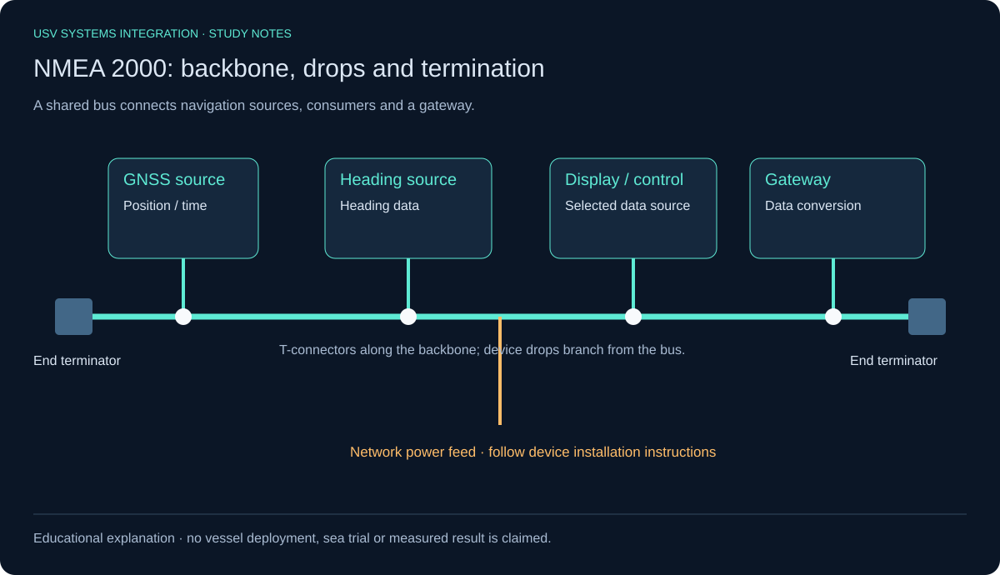
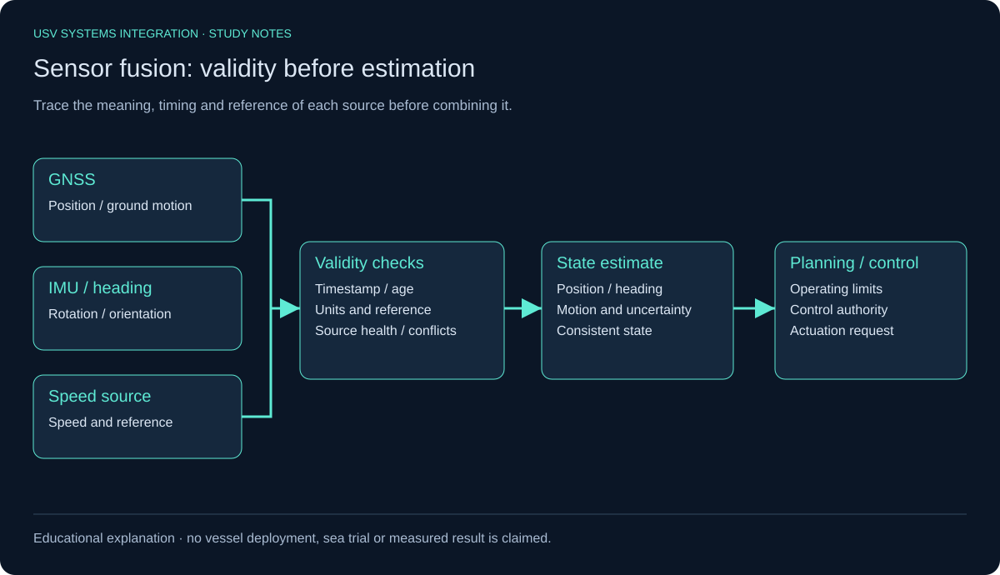
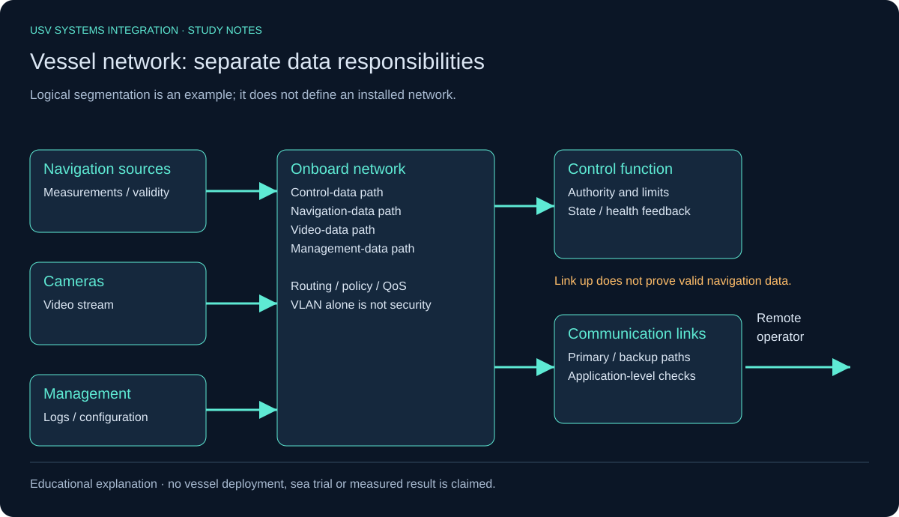
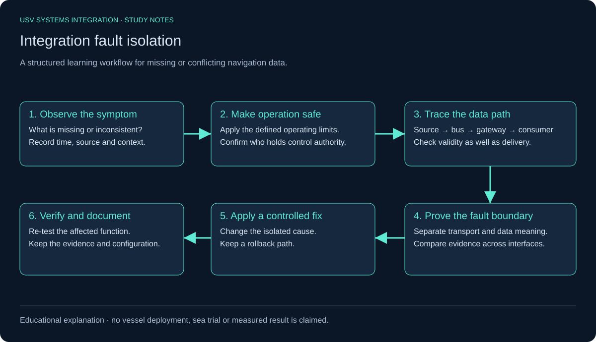

Technical learning resource
USV Systems Integration — Study Notes
Follow navigation and control information from sensor to state estimate, decision and actuation.
Study notes · explanatory diagramsThese notes support structured learning. They are not a record of vessel implementation, field experience or sea trials.
NMEA 2000 backbone
The bus, device drops, network power and end termination have separate roles.

Sensor fusion
Validate timestamps, units, reference and source health before combining observations.

Network data responsibilities
Navigation, control, video and management need distinct delivery and verification checks.

Fault isolation
Observe, make operation safe, trace the interface, prove the boundary, correct and verify.

Complete study notes and references · Visual guide and technical source attribution